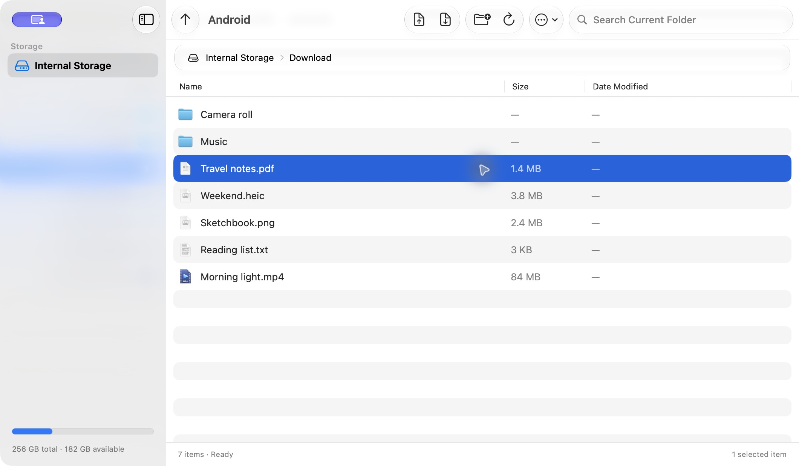

A familiar place for your files.
Browse folders, search file names, and drag files in. Built with native Mac controls, system colors, and Liquid Glass on supported versions.
Android files, right at home on your Mac.
Development build · Free & open source

Browse folders, search file names, and drag files in. Built with native Mac controls, system colors, and Liquid Glass on supported versions.
File counts, overall progress, speed, and time remaining stay in view. If a transfer stops, completed files are preserved and the failed item is reported.
The maf CLI shares the same transfer engine. JSON results, stable error codes and a clear USB session status help scripts and agents work reliably.
Install maf from More → Terminal and Agents in the app. If needed, add ~/.local/bin to PATH. Disconnect the GUI before a CLI file operation.
Guidemaf devices
maf status
maf helpSearch filters file names in the current folder. It does not scan the entire device or app-private storage.
No. Transfers run locally over USB. There is no account, cloud relay, analytics or advertising in the app or this site.